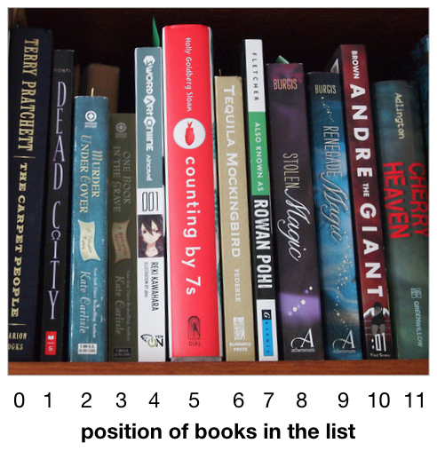
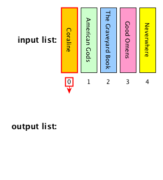
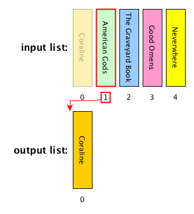
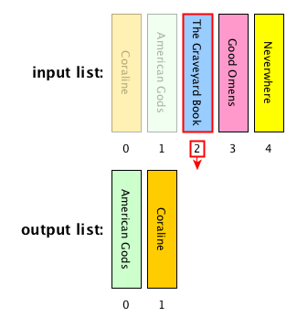
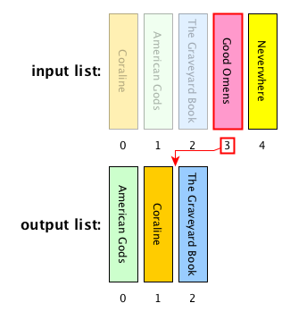
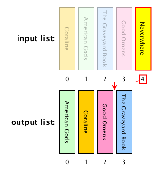
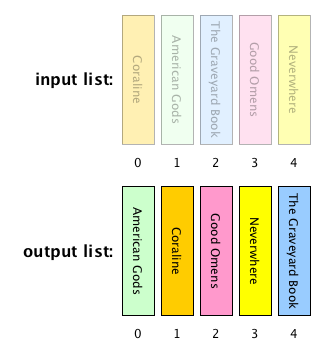

Communication 1
All the Google Docs documents with the lectures notes are now open for comments
Any question about the previous lecture?
Historic hero: Betty Holberton
She was one of the programmers of the earliest electronic and general-purpose computer, the ENIAC
She was involved in the development of several programming languages, such as COBOL and FORTRAN
She was the creator of the first statistical analysis tool
A huge part of her work about the development of algorithms for sorting the elements in a list
Why sorting is important
Sorting things is expensive, in particular if you have to order billions of items
However, having such items sorted is crucial for several additional kinds of tasks that we can perform
Library: books are clustered according to Dewey classification, and each cluster contains books ordered according to the authors' name and the book title
In this way a librarian can find a requested title avoiding to look all the billion books available one by one, thus saving a huge amount of time
Addressing computational problems
Problem-solving: the activity of creating an algorithm for solving some given computational problem, e.g. ordering alphabetically all the books in a library
Categories of problem-solving methods:
brute-force
divide and conquer
dynamic programming
backtracking
greedy
...
Brute-force approach
Brute-force algorithm: a process that reaches the perfect solution of a problem by analysing all the possible candidates that may provide a solution to a certain computational problem, and then check if each candidate solves the problem question
Advantages: simple, it finds a solution always
Disadvantages: costly for large inputs
Suggestion: use brute-force algorithms when the problem size is small
Big solution spaces

Abstract strategy board games are computational problems that have a quite huge solution space
Develop a brute-force algorithm which is able to play appropriately Go means to consider all the possible legal moves that are available on the board
Number of all the possible legal moves in Go: 208168199381979984699478633344862770286522453884530548425639456820927419612738015378525648451698519643907259916015628128546089888314427129715319317557736620397247064840935
Avoid brute-force for these kinds of problems
Iteration
The usual way for solving computational problems by means of a brute-force approach is to iterate over a certain input or a block of instructions several times
Foreach loop
for item in <collection>:
# do something using the current itemWhile loop
while <condition>:
# do something until the condition is trueForeach: an example
def stack_from_list(input_list):
output_stack = deque()
for item in input_list:
output_stack.append(item)
return output_stack
input_list =
12
15
83
output_stack =
While: an example
def run_forever():
value = 0
while value >= 0:
value = value + 1
value =
0
1
2
3
4
...
Linear search: description
Computational problem: find the position of the first occurrence of a value within a list
Iterate over the items in the input list
Check if each of them is equal to the value we are looking for
Once the value has been found, its position in the list is then returned
If the value is not contained in the list, no position is returned at all
Ancillary objects and algorithms
Tuple: sequence of values, specified in a precise order - they are different from lists since they cannot be modified
my_tuple = (1, "a", 2, ...)The function enumerate(<list>) returns an enumeration (i.e. a kind of list) of tuples, with two elements each: the first element is the position of the item in consideration in the list, while the second element is the item itself
my_list = list()
my_list.append("a")
my_list.append("b")
my_list.append("c")
enumerate(my_list)
# it will return the following enumeration of tuples:
# enumerate([(0, "a"), (1, "b"), (2, "c")])Decoupling tuples in foreach
Python allows us to decouple the items in a tuple by specifying names for each item with variables created in the for statement on-the-fly
For instance,for position, item in enumerate(my_list)
will assign (the number in the following list refers to the particular iteration of the foreach loop):
position = 0anditem = "a"position = 1anditem = "b"position = 2anditem = "c"
Linear search: algorithm
def linear_search(input_list, value_to_search):
for position, item in enumerate(input_list):
if item == value_to_search:
return positionIn Python, None (that means nothing) is returned if no return statement is executed
Insertion sort: description
Computational problem: sort all the items in a given list

Insertion sort: description
Computational problem: sort all the items in a given list

Insertion sort: description
Computational problem: sort all the items in a given list

Insertion sort: description
Computational problem: sort all the items in a given list

Insertion sort: description
Computational problem: sort all the items in a given list

Insertion sort: description
Computational problem: sort all the items in a given list

Useful functions
range(<stop_number>) returns the range (i.e. a kind of list) of all numbers from 0 to the one preceding the stop number
E.g.: range(3) returns range([0, 1, 2]), while range(0) returns an empty range
reversed(<input_list>) returns an iterator of the list as if all the elements are sorted in the opposite order
E.g.: considering my_list = list([0, 1, 2]), reversed(my_list) returns iterator([2, 1, 0])
Get and insert items by position
<list>[<position>] returns the item in the list at that particular position
E.g.: considering my_list = list(["a", "b", "c"]), my_list[1] returns "b"
The method <list>.insert(<position>, <item>) puts <item> in the position specified, and it shifts all the following elements
E.g.: my_list.insert(1, "d") modifies my_list as list(["a", "d", "b", "c"])
Insertion sort: algorithm
def insertion_sort(input_list):
result = list()
for item in input_list:
insert_position = len(result)
for prev_position in reversed(range(insert_position)):
if item < result[prev_position]:
insert_position = prev_position
result.insert(insert_position, item)
return result